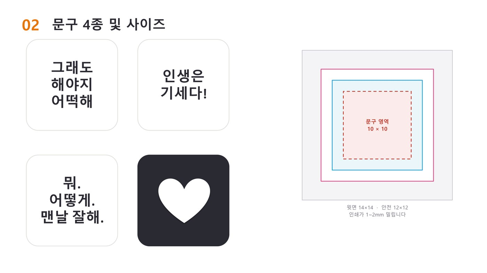
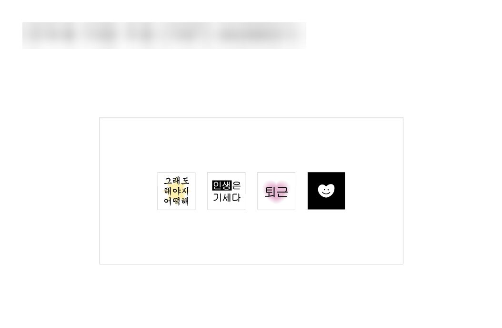
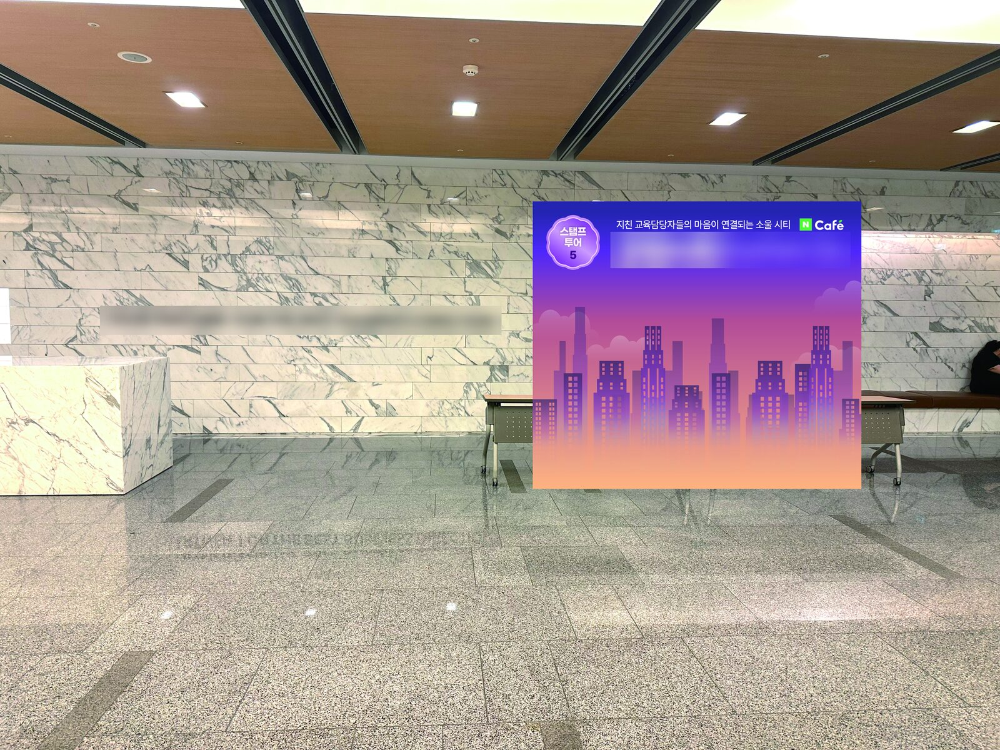
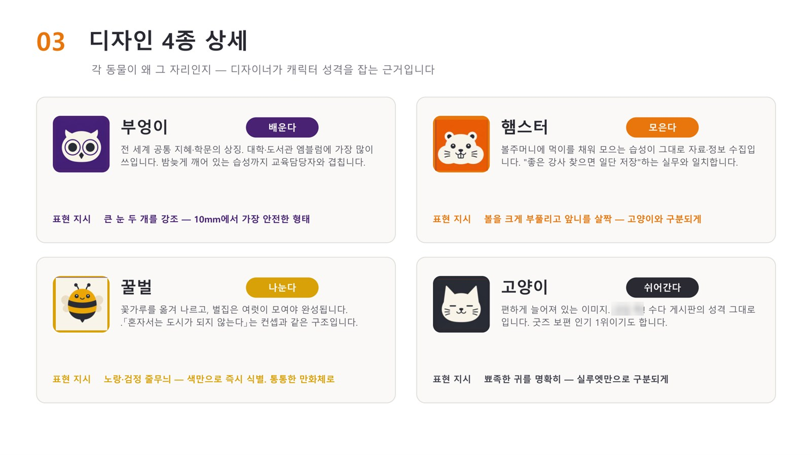
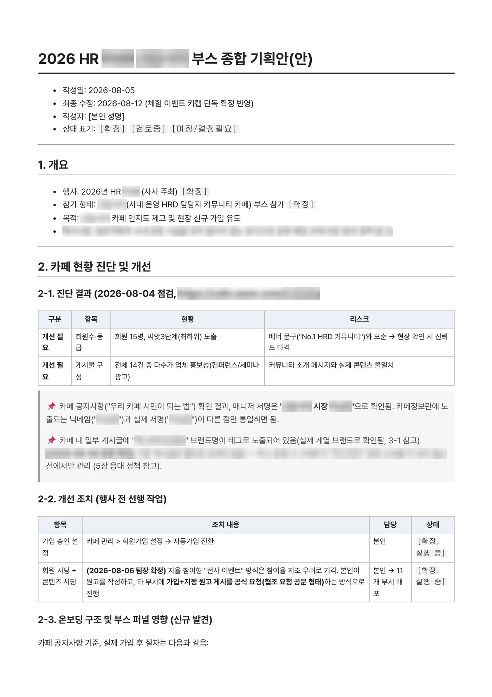
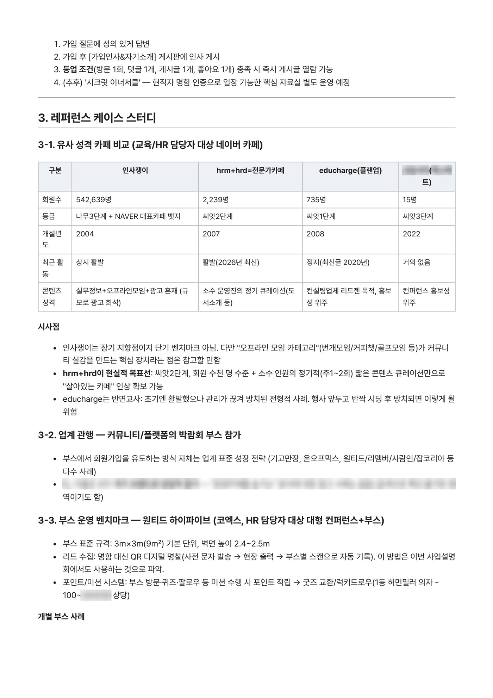
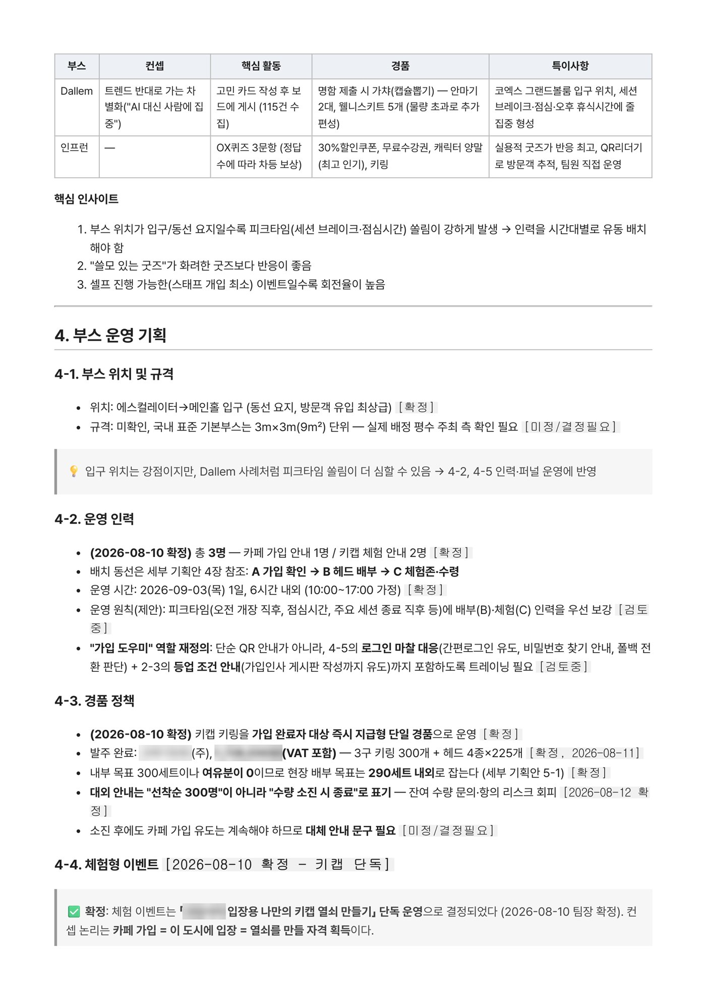
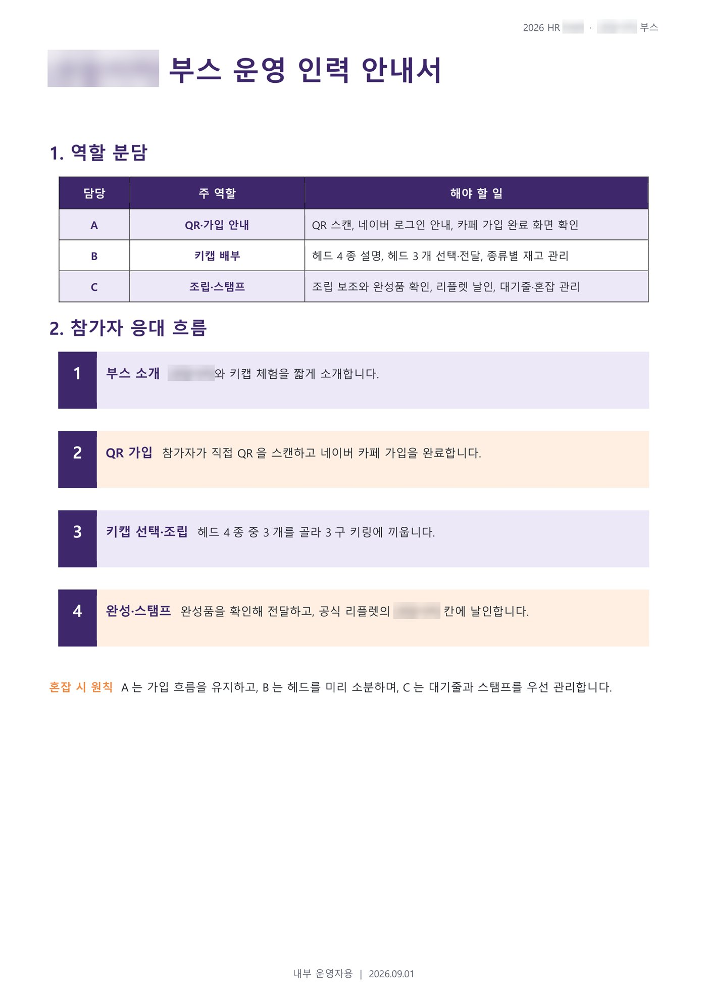
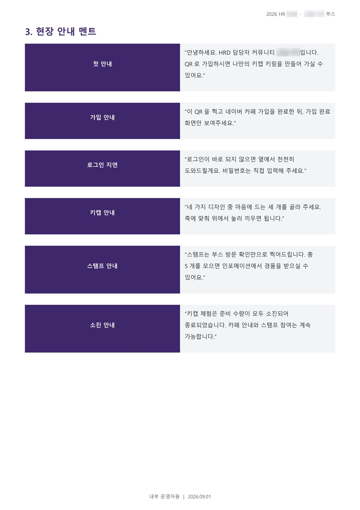

한눈에 보기
- 어디서 · 무슨 일
- 엑스퍼트컨설팅 마케팅기획팀 파견(1개월) · 2026 HR FAIR 커뮤니티 부스
- 주어진 과제
- 회원 14명에 머물던 HRD 담당자 온라인 커뮤니티의 현장 가입을 늘려야 했습니다. 사전 시딩 없이 부스만으로 방문을 끌어내야 했고, 경품은 300세트가 전부였습니다.
- 내 역할
- 카페 진단·벤치마크, 키캡키링 이벤트 콘셉트·문구·인쇄 사양 기획과 발주, 배너·POP 레이아웃 기획, 3인 운영 동선 설계와 당일 운영. 최종 디자인은 디자인팀이 했습니다.
- 결과
- 키캡키링 300세트를 당일 전량 배부했습니다. 같은 기간 커뮤니티 회원은 14명에서 323명(9/15 기준)으로 늘었습니다(부스 팀 전체 성과).
- 이 경험으로 할 수 있는 일
- 교육·행사 현장에서 참여를 끌어내는 이벤트를 기획하고, 정해진 물량과 인력에 맞춰 운영 규칙과 동선을 짤 수 있습니다.
진행 과정
- 진단커뮤니티 현황을 진단하고 유사 커뮤니티와 다른 부스를 비교해 종합 기획안을 썼습니다.
- 이벤트 콘셉트1안(캐릭터 4종) → 팀장 피드백 → 문구 후보 10개 → 2안(직장인 공감 문구 4종과 인쇄 사양) 순으로 다듬었습니다.
- 홍보물AI로 부스 영상·배너 시안을 만들고, 대형배너·스탠딩배너·POP 레이아웃을 기획해 디자인팀에 넘겼습니다.
- 운영300세트에 맞춘 배부 규칙과 3인 운영 동선, 운영 인력 안내서를 만들고 당일 현장을 운영했습니다.
만든 자료


본인 기획키캡키링 문구 4종과 인쇄 사양

디자인팀 제작키캡키링 최종 디자인

디자인팀 제작부스 대형배너 현장 시뮬레이션

본인 기획이벤트 1안: 캐릭터 4종

본인 작성종합 기획안 1쪽: 현황 진단

본인 작성종합 기획안 2쪽: 비교·벤치마크

본인 작성종합 기획안 3쪽: 인력·경품 정책

본인 작성운영 인력 안내서 1쪽

본인 작성운영 인력 안내서 2쪽종합 기획안의 "확정" 항목은 팀장 결정을 반영한 것입니다. 업체명·계정·커뮤니티 실명은 가렸습니다.